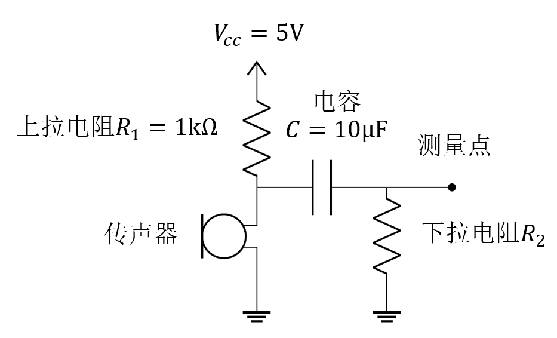

模拟电路实验（一） 示波器的使用与简易传声器电路
实验目的
- 了解示波器的示波原理和使用方法，掌握基本物理量的测量方法和技术，提高规范操作和复原能力；
- 了解常见驻极体传声器的工作原理，搭建简易传声器电路；
- 使用搭建的简易传声器测量单频声，并运用示波器的FFT功能观察频域。
预习材料
- 驻极体传声器元件的内部结构，及简易传声器电路的工作原理：小白说传感器篇——驻极体麦克风 - 知乎 (zhihu.com)
- 金属氧化物半导体场效应管（MOSFET）的微观构造及其作为放大器时的工作原理：mos管基本放大电路是什么 - 知乎 (zhihu.com)
- 示波器的使用方法：示波器那么重要，你确定不进来看看？
实验器材
面包板1个，示波器1台，万用表1个，信号发声器一台，传声器1个，USB线缆1条，USB母口1个，杜邦线若干，多种规格的电阻若干，多种规格的电容若干。实验步骤
- 参考电路原理图在面包板上搭建简易传声器电路；
 简易传声器电路原理图 - 用手机播放提供的单频声，将手机扬声器开孔靠近传声器元件，然后使用示波器测试测量点的对地电压，观察简易传声器电路输出信号的时域特征，判断其是否与输入声信号吻合；
- 使用示波器的数学功能，通过快速傅里叶变换（FFT）分析简易传声器电路输出信号的频域特征，判断其是否与输入声信号吻合。
思考题
- 说明当上拉电阻过大或过小时获得的信号会受到怎样的影响。